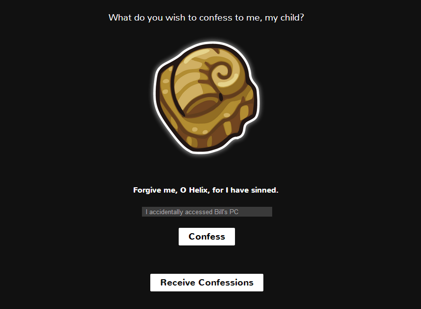

Helix Confessional
HTML, CSS, PHP, MySQL

Confess your sins! Submit your confessions to the Helix Fossil, and see if you are forgiven. And when you're done, make sure to stop by to see what other people have been confessing.
I'd been meaning to explore Web Apps for a while, and with the internet fad that was Twitch Plays Pokemon, I saw a perfect opportunity. Not only could the popularity maybe get me some exposure, I set myself a goal of a 4-5 day turnaround to publish the app, to make sure it stayed relevant and to push me to actually finish it. I used redhat's openshift platform to deploy the app, and learned MySQL in the process.
My friend Gabe agreed to draw the illustrations and my friend PJ helped by sending me his photo-shopped designs of the site, which I matched as closely as possible.
After a week, the app had over 2,500 unique visitors, which I considered to be a huge success for a small “practice” app.
A live version of the app can be found here. This version no longer takes input, and is filled with dummy data so that all responses remain appropriate.